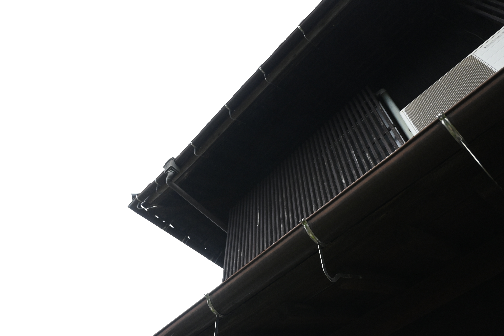

お茶会
読書と中国茶を淹れる会
ゆるく集まり、ゆっくりお茶を。本を読むもよし、喋りにくるもよし。


炭鉱がまだ栄えていたころから、川と街道のほとりに立つ家。かつては石炭を運ぶ人たちや、その勤め人たちが集まり、休んでいく場所でもあったといいます。その後は大家さんの一家が代々受け継ぎ、自分たちの手で直しながら、丁寧に住み継いできました。
「壊されてしまったり、朽ちていくのを眺めるより、
みんなに使ってもらえたら嬉しい」
思い出のつまった大切な家を、これからも生かしていきたい。大切に使ってくれる人とともに、次の代へつないでいきたい——大家さんのその思いと私たちが出会い、このプロジェクトははじまりました。ここをどう使っていくのか、どう残していくのか。大家さんと一緒に、ゆっくり探っていく途中をここに記録します。
土間に差す光、年月を経た木の質感、庭に咲く季節の花。



和裁が教えられ、美容室が二十年あまりつづき、生け花の教室も開かれていました。呉服屋さんが出入りし、知らない人が家にいるのが当たり前。たくさんのお客さんが訪れるこのお家を少しずつ手を加えながら守ってきた跡が、ところどころに見受けられます。
大きな計画表はありません。できることから、無理のないペースで。進んだぶんだけ、ここに書き足していきます。
大家さん一家とお会いし、家の歴史や思い出をうかがいました。この日に聞いた話のひとつひとつが、いまの取り組みの出発点になっています。
写真と映像で、今の姿を残していきます。季節ごとに表情が変わる、そのときどきの様子もあわせて。
ご家族だけで管理してきたこのお家。私たちも時々訪れながら、手入れの仕方や使い方を学んでいきます。作業というよりも、一緒に過ごす時間として。
最新の記録をここに。過去のものは一覧からどうぞ。
大家さん一家にお会いし、家の歴史と思い出をうかがいました。すべての出発点になった日。
ゆるく集まり、ゆっくりお茶を。本を読むもよし、喋りにくるもよし。
味噌づくりのワークショップや、庭の手入れをかねた集まりなど。決まりしだい、ここでお知らせします。

ゆっくりと、使う人を増やしていけたらなと思っています。
まだまだ先ではありますが、少しずつ情報公開していきますのでお待ちください。